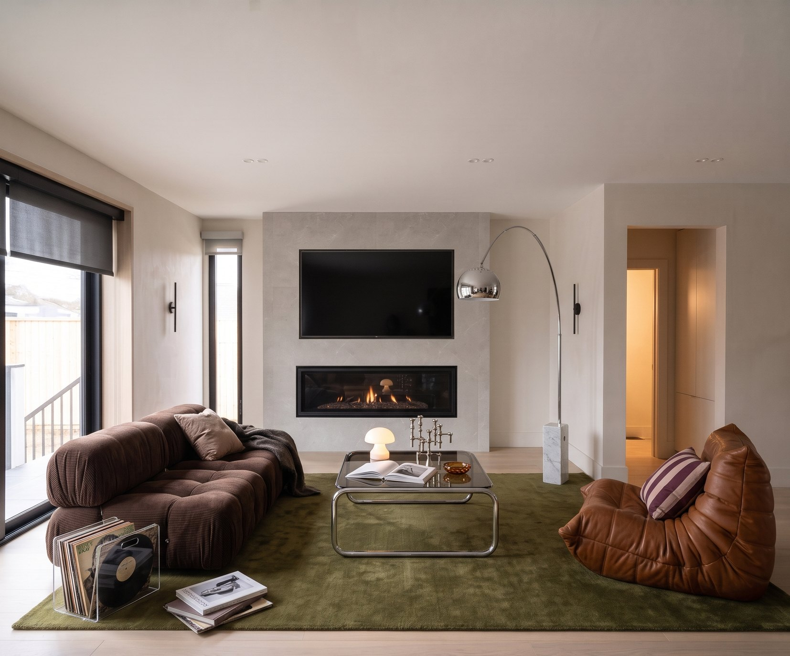
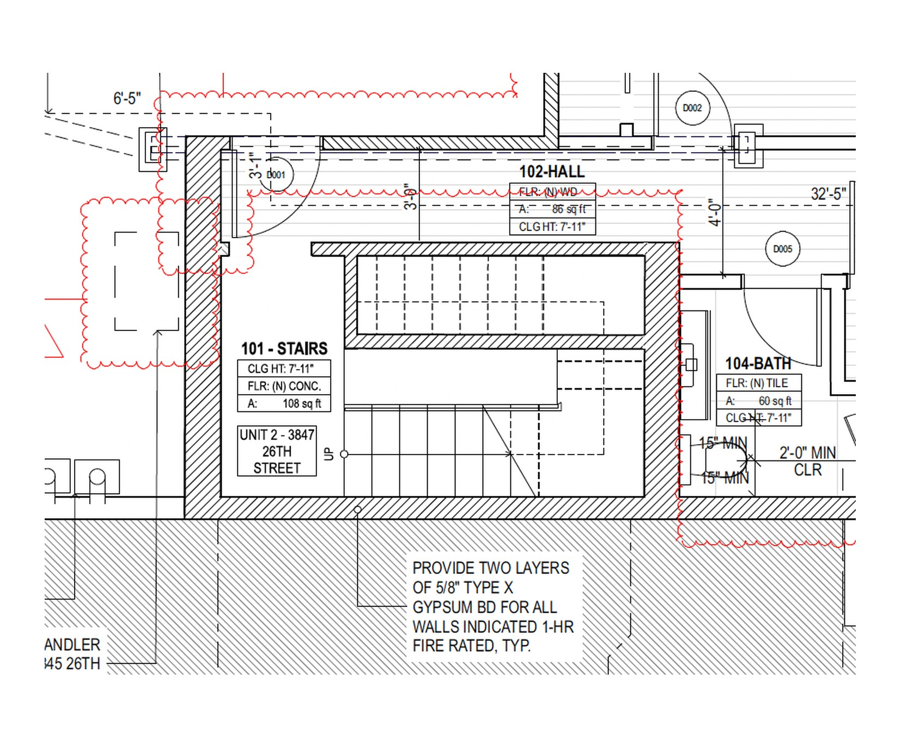
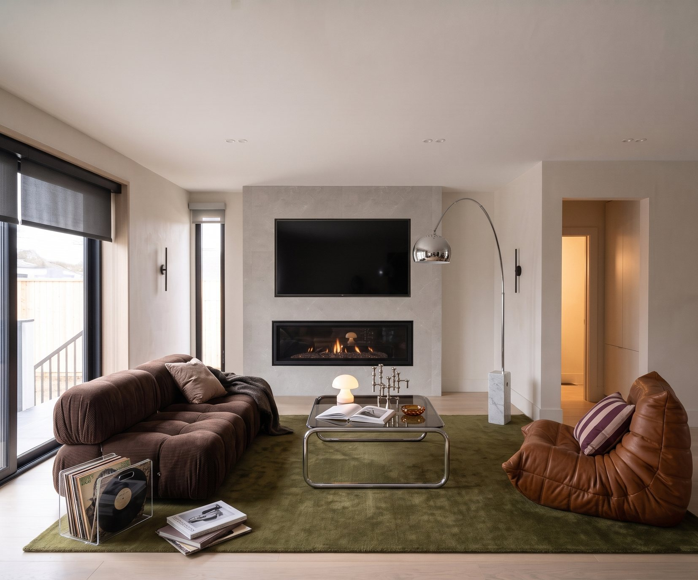
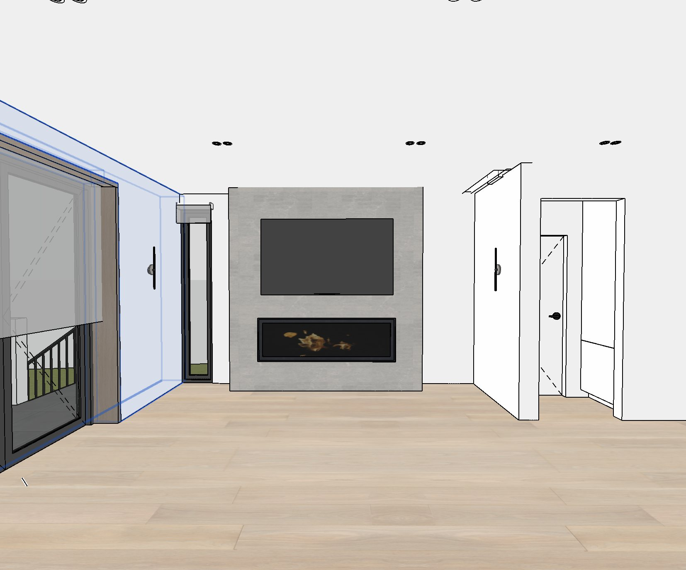
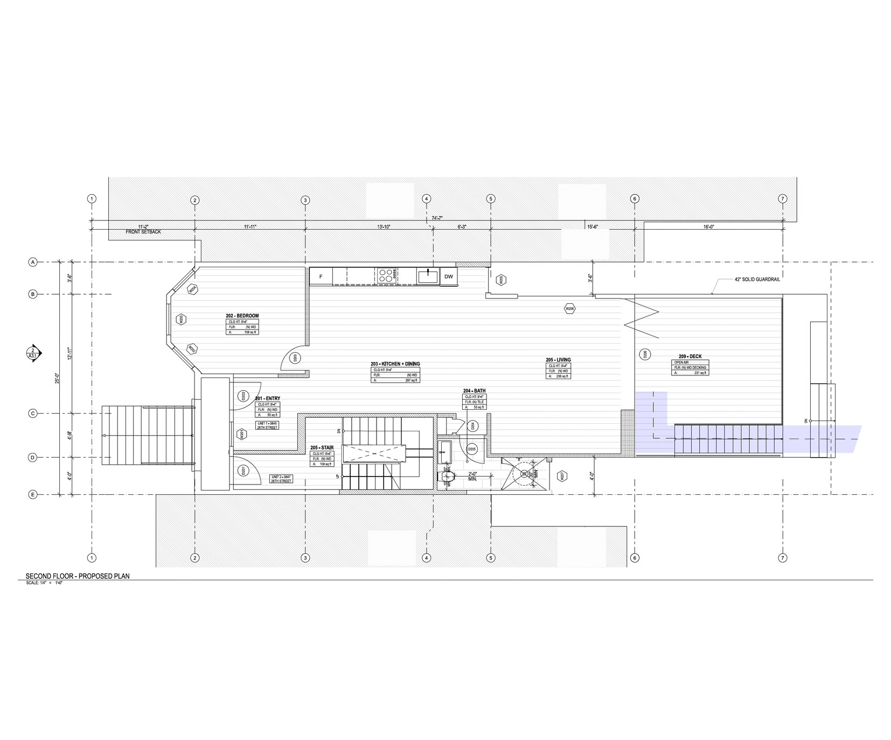
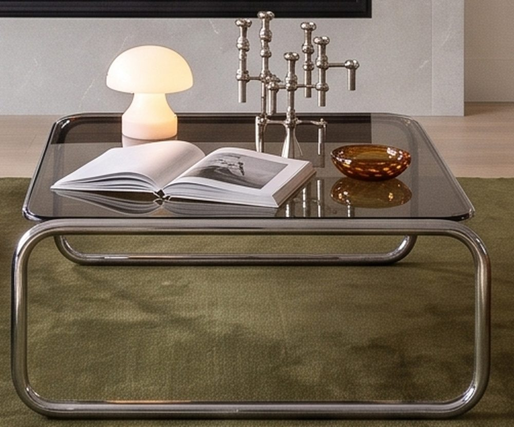
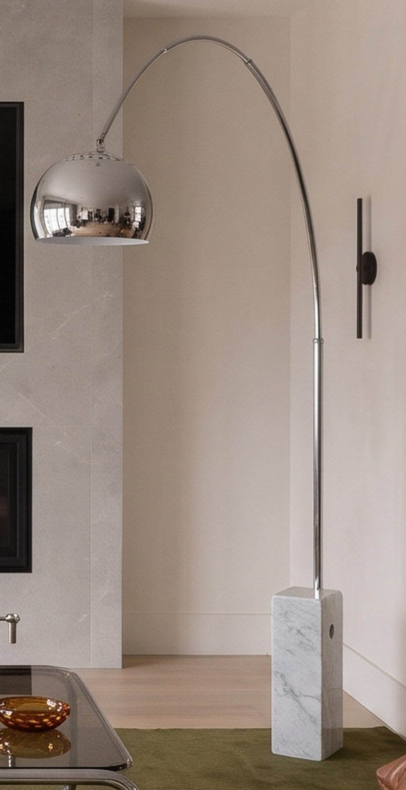
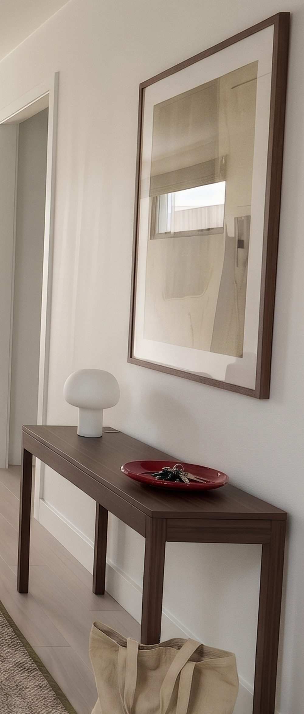
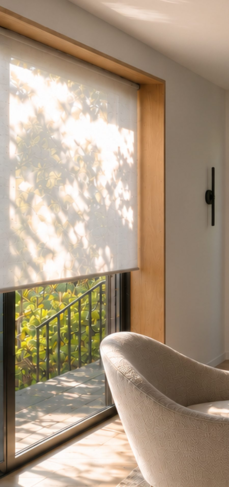
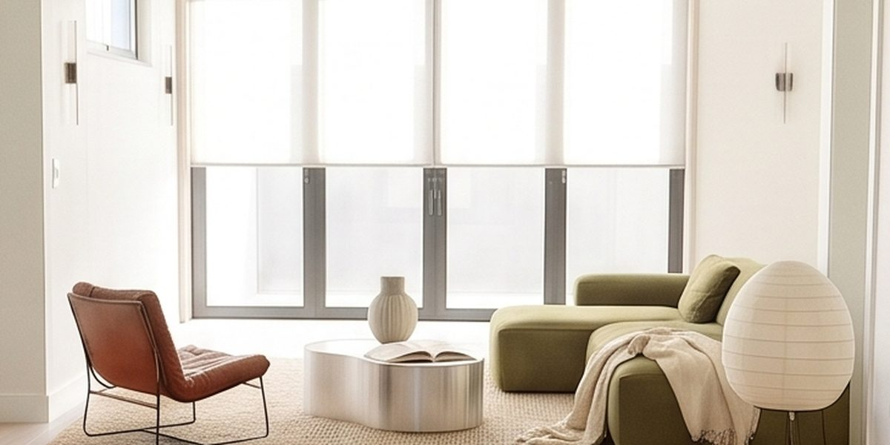

I carried the same pale oak floor through the kitchen, dining area and living room. From the sink, you can see all the way to the stone fireplace.
Project 01
A light-filled home
- Spaces
- Living · Kitchen · Dining
The Living Room


Two slim black sconces frame the TV and low fireplace on the stone wall. In the afternoon, the trees outside the wood-lined window cast shadows across the room.
The Living Room, Furnished


I paired the corduroy sofa with a glass coffee table so the middle of the room still feels open. The little lamp brings the light down to the level of the sofa, and the records are within reach by the window.
The Kitchen


A long run of warm oak cabinets floats above a pale stone counter, with a strip of light tucked underneath so the counter glows at night. From the sink you look straight down the oak floor to the windows and the fireplace.
Dining & Lounge


Looking the other way, a wall of tall, handle-free cabinets hides the fridge and pantry and holds two built-in ovens. An oval walnut table on a woven rug makes the dining spot, and past it an olive sofa and a paper lantern make a cozy corner by the windows.
Details









